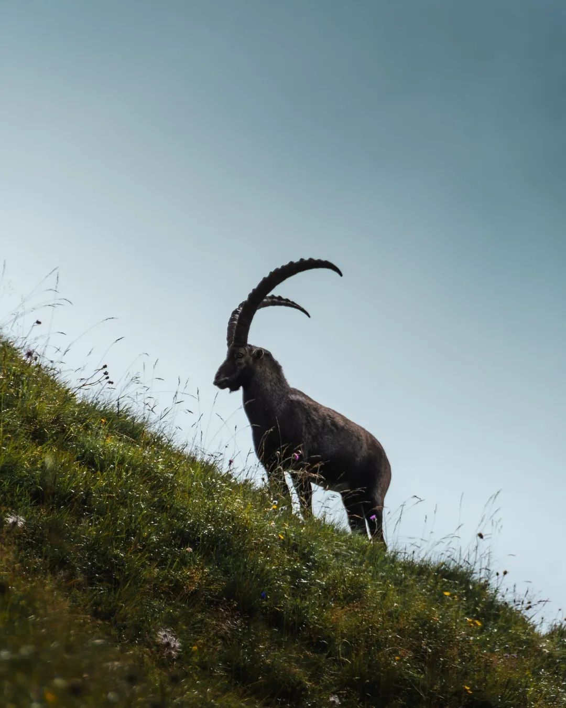

Photo · @oliwear.jWILDLIFE
Marmots and ground squirrels right next to Saas Fee village - separate from Spielboden.
The wildlife here is used to people but still wild. Early morning is best, before the day trippers arrive. Long lens recommended - 200mm at minimum.
This is a quick detour if you are already in Saas Fee, not a full day outing.